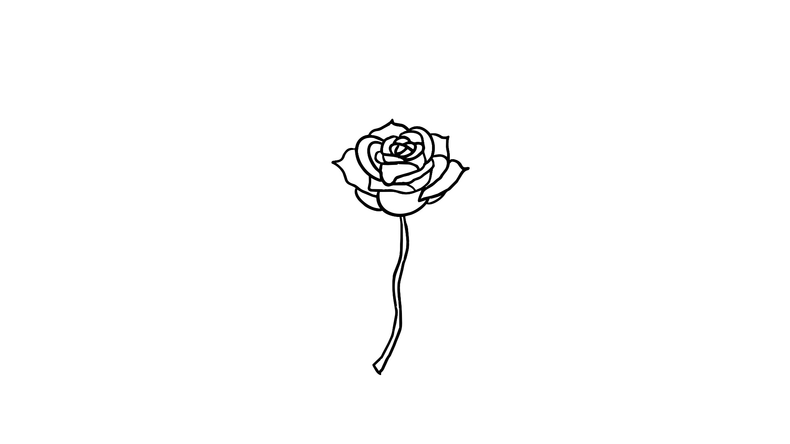

Art 74: New Media
These projects experiment with four different ways of making images and stories: distortion, collage, editing over time, and navigation through links. You can explore them in order or follow the project that interests you most.
Project directory
- 01 / Glitch — Breaking the Image
- 02 / Midnight Terror — 2D Meme Mashup
- 03 / Classic — Time-Based Mashup
- 04 / Draw a Rose — Hypertext
01 / Glitch
What happens when a digital image doesn't behave as expected? Distortion becomes part of the composition.

02 / Midnight Terror
A playful horror story told by remixing familiar memes and cartoon characters.

03 / Classic
A time-based mashup combining a Resident Evil dialogue scene with imagery of Valorant's Haven map. Watch the video →

04 / Draw a Rose
An interactive drawing told through linked HTML pages, finishing with a choice between rose variations.
